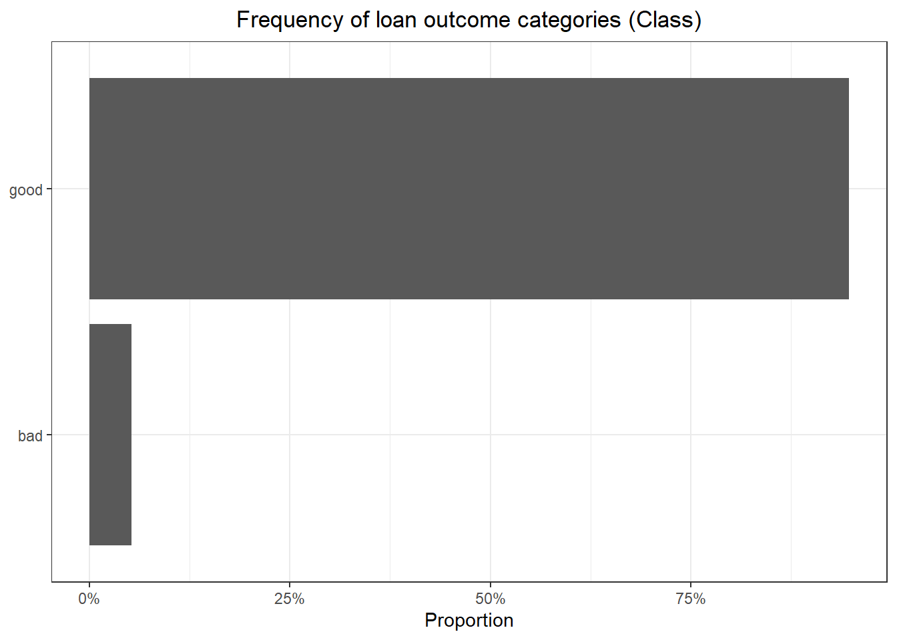
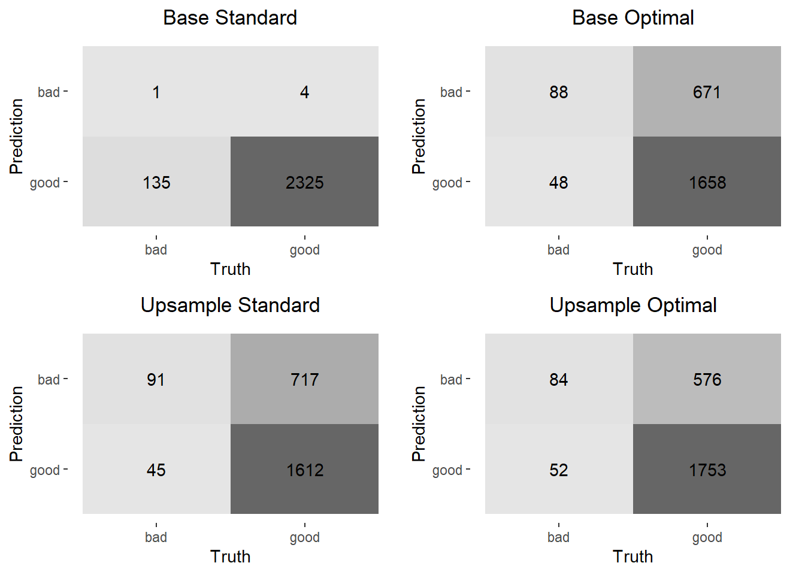

Optimal Threshold vs. Upsampling
Dealing with Unbalanced Data
Introduction
In any binary classification analysis it is common to have to deal with heavily unbalanced data, i.e., the frequency of the majority class in the dependent variable is overwhelmingly greater than that of the minority class. One of the main reasons this can be problematic is that many classification algorithms are biased toward the majority class. If 95% of the observations belong to the majority class in the training data and the algorithm always predicts the majority class, then it will have achieved 95% accuracy.
There are many ways of dealing with unbalanced data including changing from a classification algorithm to an anomaly detection algorithm like an isoforest or a one-class SVM, using SMOTE to re-balance the data sets in pre-processing, up- or down-sampling, and changing the classification threshold. Here I will only deal with up-sampling and changing the classification threshold to see how it affects classification metrics by way of going through an exercise. I’ll first create and tune a base model then do the same for an up-sampled model using Tidymodels (Kuhn and Wickham 2020). Hyperparameter tuning will be done with the finetune package (Kuhn 2023a). I’ll then find the optimal threshold for each using the probably package (Kuhn, Vaughan, and Ruiz 2023). Finally I’ll show a comparison of their respective classification metrics.
Lending Club Data
For this project I’ll be using the lending_club data set from the modeldata (Kuhn 2023b) package. The data contain the Class variable which indicates whether a loan was “good” or bad”. For the purposes of this analysis I also will consider the “bad” outcome as the event to predict.
Data Exploration
The first step is to load the data using the readr package from the Tidyverse (Wickham et al. 2019) and summarize it using the skimr package (Waring et al. 2022).
| Name | lending_club |
| Number of rows | 9857 |
| Number of columns | 23 |
| _______________________ | |
| Column type frequency: | |
| factor | 6 |
| numeric | 17 |
| ________________________ | |
| Group variables | None |
Variable type: factor
| skim_variable | n_missing | ordered | n_unique | top_counts |
|---|---|---|---|---|
| term | 0 | FALSE | 2 | ter: 7047, ter: 2810 |
| sub_grade | 0 | FALSE | 35 | C1: 672, B5: 624, A1: 612, B3: 607 |
| addr_state | 0 | FALSE | 50 | CA: 1324, TX: 900, NY: 767, FL: 731 |
| verification_status | 0 | FALSE | 3 | Sou: 3742, Not: 3434, Ver: 2681 |
| emp_length | 0 | FALSE | 12 | emp: 3452, emp: 893, emp: 769, emp: 733 |
| Class | 0 | FALSE | 2 | goo: 9340, bad: 517 |
Variable type: numeric
| skim_variable | n_missing | mean | sd | p0 | p25 | p50 | p75 | p100 | hist |
|---|---|---|---|---|---|---|---|---|---|
| funded_amnt | 0 | 15683.56 | 8879.11 | 1000.00 | 8500.00 | 15000.00 | 21000.00 | 40000.00 | ▆▇▅▃▂ |
| int_rate | 0 | 12.53 | 4.89 | 5.32 | 8.49 | 11.99 | 15.31 | 28.99 | ▇▇▃▂▁ |
| annual_inc | 0 | 80320.36 | 53450.17 | 0.00 | 50000.00 | 68900.00 | 96000.00 | 960000.00 | ▇▁▁▁▁ |
| delinq_2yrs | 0 | 0.33 | 0.89 | 0.00 | 0.00 | 0.00 | 0.00 | 22.00 | ▇▁▁▁▁ |
| inq_last_6mths | 0 | 0.58 | 0.88 | 0.00 | 0.00 | 0.00 | 1.00 | 5.00 | ▇▁▁▁▁ |
| revol_util | 0 | 51.73 | 24.38 | 0.00 | 33.20 | 51.80 | 70.40 | 144.30 | ▅▇▇▂▁ |
| acc_now_delinq | 0 | 0.01 | 0.08 | 0.00 | 0.00 | 0.00 | 0.00 | 2.00 | ▇▁▁▁▁ |
| open_il_6m | 0 | 2.75 | 2.93 | 0.00 | 1.00 | 2.00 | 3.00 | 32.00 | ▇▁▁▁▁ |
| open_il_12m | 0 | 0.74 | 1.01 | 0.00 | 0.00 | 0.00 | 1.00 | 20.00 | ▇▁▁▁▁ |
| open_il_24m | 0 | 1.62 | 1.70 | 0.00 | 0.00 | 1.00 | 2.00 | 30.00 | ▇▁▁▁▁ |
| total_bal_il | 0 | 35286.92 | 41923.62 | 0.00 | 9450.00 | 23650.00 | 46297.00 | 585583.00 | ▇▁▁▁▁ |
| all_util | 0 | 60.31 | 20.28 | 0.00 | 47.00 | 62.00 | 75.00 | 198.00 | ▂▇▂▁▁ |
| inq_fi | 0 | 0.93 | 1.47 | 0.00 | 0.00 | 0.00 | 1.00 | 15.00 | ▇▁▁▁▁ |
| inq_last_12m | 0 | 2.19 | 2.44 | 0.00 | 0.00 | 2.00 | 3.00 | 32.00 | ▇▁▁▁▁ |
| delinq_amnt | 0 | 12.17 | 565.47 | 0.00 | 0.00 | 0.00 | 0.00 | 42428.00 | ▇▁▁▁▁ |
| num_il_tl | 0 | 8.64 | 7.52 | 0.00 | 4.00 | 7.00 | 11.00 | 82.00 | ▇▁▁▁▁ |
| total_il_high_credit_limit | 0 | 45400.75 | 45103.21 | 0.00 | 16300.00 | 34375.00 | 60786.00 | 554119.00 | ▇▁▁▁▁ |
The above data summary shows some important things. First, there are 9,857 observations and 23 variables with no missing values. Also, the data has 6 factor variables and 17 numeric variables. It shows that most of the numeric variables are left skewed. The “sub_grade” and “addr_state” factor variables have 35 and 50 levels respectively. With so many unique values it’s very likely that some of the classes in each of those variables become overwhelmed by majority classes. While there are feature engineering steps that I can take such as consolidating infrequent classes or splitting up sub_grade into constituent parts, I’ll just allow the feature selection step to handle it. Finally, the “Class” factor variable (dependent variable) has two levels with the majority class – “good” – having 9,340 observations and the minority class – “bad” – having 517 observations.
Here I’ll just look at the proportions of the Class variable.
Code

Here we see a sever class unbalance with only about 5% of loans having a “bad” outcome.
Create Data Splits and Other Common Elements
For the analysis I’ll split the data into training (75%) and test (25%) sets stratified by the Class variable. I’ll then create 100 bootstraps of the training data for model tuning, also stratified by the Class variable. Stratification will ensure that both cuts of the data and the bootstraps retain the class unbalance as close to the proportions of the original data.
Here I also create a list of features to control the model tuning process.
Code
# Create training/test split
set.seed(95)
tt_split <- initial_split(lending_club, prop = 0.75, strata = Class)
# Create the bootstrap object
set.seed(386)
bstraps <- bootstraps(training(tt_split), times = 100, strata = Class)
# Create the model object for the workflows
lr_mod <- logistic_reg(mode = "classification", engine = "glm")
# Create a list of control options
race_control <- control_race(
verbose = FALSE,
allow_par = FALSE,
burn_in = 3,
save_workflow = TRUE,
save_pred = TRUE
)Train Base Model
The base recipe will perform the following steps:
Remove variables with near-zero variance
Scale and center all numeric variables
Convert categorical variables to dummy variables
Select variables based on mRMR using the
colinopackage (Pawley, Kuhn, and Jacques-Hamilton 2023); the percentile threshold used to decide which variables to keep will be chosen through model tuning
The base recipe will be combined with a logistic regression model specification to put into a workflow. This workflow then goes through a Bayesian hyperparameter tuning process to find the best mRMR threshold as mentioned above. “Best” is defined as the full model specification that yields the highest area under the receiver operator curve (ROC-AUC) because I’ll be choosing the optimal probability threshold on the basis of this curve, even though it would be preferable to choose on the basis of the area under the precision-recall curve (PR-AUC) with unbalanced data. (Rosenberg 2022)
Code
# Create a base recipe
base_rec <- recipe(Class ~ ., data = training(tt_split)) |>
step_nzv(all_predictors()) |>
step_normalize(all_numeric_predictors()) |>
step_dummy(all_nominal_predictors(), one_hot = FALSE) |>
step_select_mrmr(
all_predictors(),
threshold = tune(),
outcome = "Class"
)
# First tune the base model to get the best set of variables with MRMR
base_wflow <- workflow() |> add_recipe(base_rec) |> add_model(lr_mod)
set.seed(40)
base_tuned <- tune_race_win_loss(
base_wflow,
resamples = bstraps,
control = race_control,
grid = 10,
metrics = metric_set(pr_auc, roc_auc, accuracy)
)
# Get the workflow with the best MRMR threshold
best_base <- select_best(base_tuned, "roc_auc")
# Get the MRMR threshold from the best base model
mrmr_threshold <- best_base |> pull(threshold)The mRMR threshold associated with the best model is 0.9478018 .
Train Upsampled Model
The upsampled model will only add the pre-processing step of upsampling the minority class to the same proportion as the majority class (or close to it) by resampling observations with a Class value from the minority class using the themis package (Hvitfeldt 2023). To ensure that this is the only difference, I’ll take the mRMR threshold that was tuned for the base model directly from the best base model and specify it as the threshold for the upsampling model.
Code
# Build a recipe for upsampling by first updating the MRMR step from the base recipe with the threshold from the tuning process then adding upsampling
upsample_rec <- base_rec
select_mrmr_step <- tidy(upsample_rec) |>
filter(type %in% "select_mrmr") |>
pull(number)
upsample_rec$steps[[select_mrmr_step]] <- update(
upsample_rec$steps[[select_mrmr_step]],
threshold = mrmr_threshold
)
upsample_rec <- upsample_rec |>
step_upsample(Class, over_ratio = tune())
# Create the upsample workflow object
upsample_wflow <- workflow() |> add_recipe(upsample_rec) |> add_model(lr_mod)
# Tune the workflow containing the upsample recipe
set.seed(40)
upsample_tuned <- tune_race_win_loss(
upsample_wflow,
resamples = bstraps,
control = race_control,
grid = 10,
metrics = metric_set(pr_auc, roc_auc, accuracy)
)
# Get the workflow with the best MRMR threshold
best_upsample <- select_best(upsample_tuned, "roc_auc")The best over-sampling ratio is 1.1065577 .
Compare Model Classification Metrics
Now that I’ve run both models and gotten the best hyperparameters for each, I’ll finalize both models and ensure that I have the same sets of variables in the models.
Code
# Get evaluation datasets for both workflows
set.seed(75)
eval_base <- base_wflow |>
finalize_workflow(best_base) |>
last_fit(tt_split)
# Build the evaluation tibble for the upsample case
set.seed(212)
eval_upsample <- upsample_wflow |>
finalize_workflow(select_best(upsample_tuned, "roc_auc")) |>
last_fit(tt_split)
eval_base |>
extract_fit_engine() |>
tidy() |>
select(base = term) |>
bind_cols(
eval_upsample |>
extract_fit_engine() |>
tidy() |>
select(upsample = term)
) |>
kable(booktabs = TRUE) |>
kable_styling("striped")| base | upsample |
|---|---|
| (Intercept) | (Intercept) |
| int_rate | int_rate |
| inq_last_6mths | inq_last_6mths |
| open_il_12m | open_il_12m |
| sub_grade_G4 | sub_grade_G4 |
| addr_state_SD | addr_state_SD |
| verification_status_Verified | verification_status_Verified |
The above table shows that both models ended up with the same sets of variables. Next we’ll find the optimal threshold cut-offs for each set of predictions on the test data using Youden’s J-Index.
Code
base_preds <- tibble(
truth = collect_predictions(eval_base) |> pull(Class),
estimate = collect_predictions(eval_base) |> pull(.pred_bad),
pred_class = collect_predictions(eval_base) |> pull(.pred_class)
)
# Find the optimal classification threshold for the base model
opt_thresh_base <- base_preds |>
threshold_perf(truth, estimate, seq(0, 1, length.out = 1000)) |>
filter(.metric %in% "j_index") |>
slice_max(.estimate, with_ties = FALSE) |>
pull(.threshold)
upsample_preds <- tibble(
truth = collect_predictions(eval_upsample) |> pull(Class),
estimate = collect_predictions(eval_upsample) |> pull(.pred_bad),
pred_class = collect_predictions(eval_upsample) |> pull(.pred_class)
)
# Find the optimal classification threshold for the upsample model
opt_thresh_upsample <- upsample_preds |>
threshold_perf(truth, estimate, seq(0, 1, length.out = 1000))|>
filter(.metric %in% "j_index") |>
slice_max(.estimate, with_ties = FALSE) |>
pull(.threshold)The optimal probability threshold for classifying a loan as bad with the base model is 0.0550551 and that for the upsampling model is 0.5525526
Each table of predictions currently has 3 columns showing the actual class for a given observation (truth), the prediction probability associated with that observation being a bad loan (estimate), and a predicted class based on a probability threshold of 0.5 (pred_class). The table below shows the first few predictions from the base model.
| truth | estimate | pred_class |
|---|---|---|
| good | 0.0350714 | good |
| good | 0.0107027 | good |
| good | 0.0297951 | good |
| good | 0.0432709 | good |
| good | 0.0335889 | good |
| good | 0.0310299 | good |
| good | 0.0452632 | good |
| good | 0.0226798 | good |
| good | 0.0170578 | good |
| good | 0.0286983 | good |
Now I’d like to add to each of these tables another column containing the predicted class based on the optimal probability threshold for each respective table. The below table shows a few cases for which the predicted class using a 0.5 probability threshold does not match the predicted class using the optimal probability threshold of 0.5525526 .
Code
base_preds <- base_preds |>
mutate(
opt_pred_class = if_else(estimate >= opt_thresh_base, "bad", "good") |>
factor(levels = c("bad", "good"))
)
upsample_preds <- upsample_preds |>
mutate(
opt_pred_class = if_else(
estimate >= opt_thresh_upsample,
"bad",
"good"
) |>
factor(levels = c("bad", "good"))
)
upsample_preds |>
filter(opt_pred_class != pred_class) |>
slice_head(n = 10) |>
kable(booktabs = TRUE) |>
kable_styling("striped")| truth | estimate | pred_class | opt_pred_class |
|---|---|---|---|
| good | 0.5030688 | bad | good |
| bad | 0.5284232 | bad | good |
| good | 0.5373165 | bad | good |
| good | 0.5007787 | bad | good |
| good | 0.5173375 | bad | good |
| good | 0.5463947 | bad | good |
| bad | 0.5297278 | bad | good |
| good | 0.5227147 | bad | good |
| good | 0.5284232 | bad | good |
| good | 0.5284232 | bad | good |
Next I’ll plot confusion matrices for each set of predictions.
Code
conf_mats <- list(base = base_preds, upsample = upsample_preds) |>
map(
\(x) list(
conf_mat(x, truth = truth, estimate = pred_class),
conf_mat(x, truth = truth, estimate = opt_pred_class)
) |>
set_names("standard", "optimal")
) |>
list_flatten()
conf_mat_plots <- conf_mats |>
imap(
\(x, y) {
plot_title <- str_replace(y, "_", " ") |>
str_to_title()
autoplot(x, type = "heatmap") +
ggtitle(plot_title) +
theme(plot.title = element_text(hjust = 0.5))
}
)
cowplot::plot_grid(plotlist = conf_mat_plots)
The above confusion matrices show that both changing the probability threshold for classification as a bad loan and upsampling have a significant impact on the number of positive predictions (“bad” loan), even though most of those are predicted incorrectly with this model. It’s also interesting to note that doing both – changing the probability threshold and upsampling – shows very little improvement over doing just one or the other. Below are some classification metrics for each model specification.
Code
| metric | Base Standard | Base Optimal | Upsample Standard | Upsample Optimal |
|---|---|---|---|---|
| accuracy | 0.9436105 | 0.7083164 | 0.6908722 | 0.7452333 |
| kap | 0.0103118 | 0.1137115 | 0.1086066 | 0.1316040 |
| sens | 0.0073529 | 0.6470588 | 0.6691176 | 0.6176471 |
| spec | 0.9982825 | 0.7118935 | 0.6921426 | 0.7526836 |
| ppv | 0.2000000 | 0.1159420 | 0.1126238 | 0.1272727 |
| npv | 0.9451220 | 0.9718640 | 0.9728425 | 0.9711911 |
| mcc | 0.0285977 | 0.1775336 | 0.1757144 | 0.1909560 |
| j_index | 0.0056355 | 0.3589523 | 0.3612602 | 0.3703306 |
| bal_accuracy | 0.5028177 | 0.6794762 | 0.6806301 | 0.6851653 |
| detection_prevalence | 0.0020284 | 0.3079108 | 0.3277890 | 0.2677485 |
| precision | 0.2000000 | 0.1159420 | 0.1126238 | 0.1272727 |
| recall | 0.0073529 | 0.6470588 | 0.6691176 | 0.6176471 |
| f_meas | 0.0141844 | 0.1966480 | 0.1927966 | 0.2110553 |
The first thing that one might notices from the above is how high the accuracy is for the base model. It’s important to remember, though, that when a data set is so unbalanced all a model has to do is predict the majority class all the time and it will have high accuracy. That model, though, has a very low sensitivity and high specificity. The high specificity, again, is due to the fact that the actual data has an overwhelming proportion of the majority class. Looking across at the metrics for the other models one sees drops in both accuracy and specificity, but much more significant increases in sensitivity from the base model. It’s also useful to note that other metrics like balanced accuracy, kappa, mcc, and f_measure also improve. This is further evidence of the effect that the imbalance in classes has on the base model.